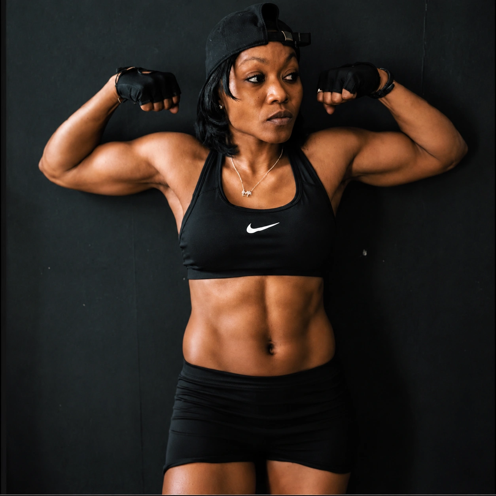
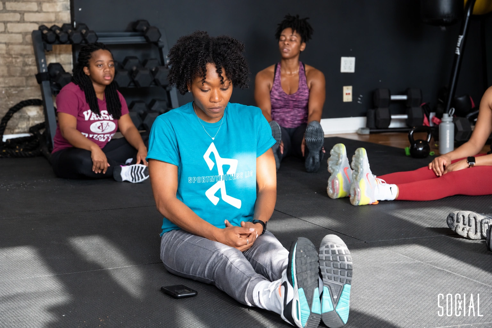
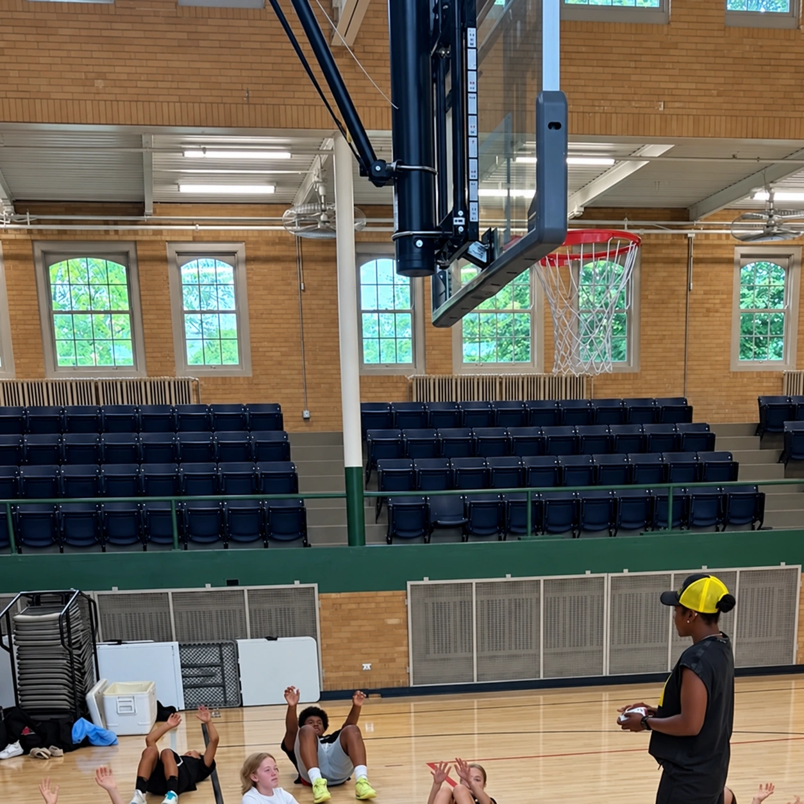

MILWAUKEE · COACH YOSHI BARNES
FIND YOURTRAINING.
To gain, maintain, or lose.
Personal, group and online training with Yoshi Barnes.
EMPOWER THE BODY. STRENGTHEN THE MIND.
MEET YOUR TRAINER
YOSHI
BARNES.
Fitness coach. Community builder.
The person behind Sport My Fitness.
“It’s about the conversation.
YOSHI BARNES
It’s about connection.”
Yoshi brings movement, encouragement and conversation into her coaching with adults and young people.
Her work with young people connects fitness with mental and emotional well-being. In the gym and in the community, the connection matters.


